역사 답사 기록 · 경기도 양주
왕위를 내려놓은 노인이 산속 폐허에서 찾은 것
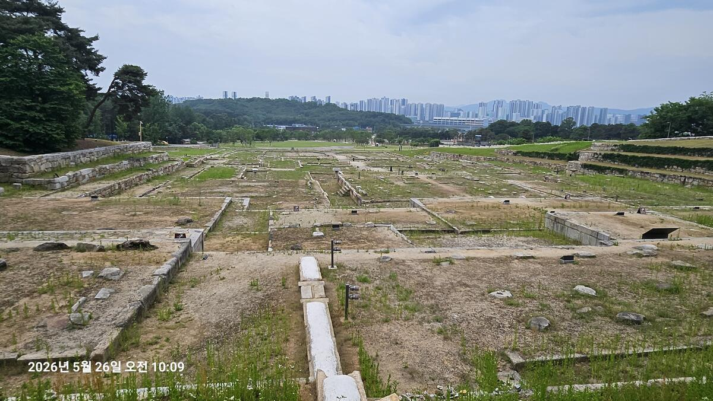
Prologue
"양주에 있는 대찰에서 옛 왕이 세월을 보냈다"는 시구가 있다. 그 절이 바로 여기, 회암사다. 조선을 세운 태조 이성계가 왕자의 난으로 아들 태종에게 권력을 빼앗긴 뒤, 스승 무학대사가 머물던 이 산사에 기대어 마음을 달랬던 곳. 지금은 돌 주춧돌과 계단과 축대만 남아 있지만, 그 쓸쓸함이 오히려 태조의 처지를 더 잘 말해준다.
Scene 01
회암사지를 처음 본 사람은 한 가지 낯선 인상을 받는다. 건물들이 산을 등지고 일자(一字)로 줄지어 배치되어 있다는 것이다. 앞쪽 낮은 곳에서 시작해 뒤쪽 높은 곳으로 올라가며 구역이 차례차례 이어진다. 우리가 흔히 아는 한국 사찰의 배치 방식과는 전혀 다르다.
우리나라 대부분의 사찰은 일주문→천왕문→누각→대웅전을 거치는 중심축을 공유하면서도, 각 건물이 마당(中庭)을 사이에 두고 좌우로 펼쳐지는 분산형·중정형 구조를 취한다. 그런데 회암사지는 그렇지 않다. 정면 3~7칸 규모의 전각들이 단(段)을 달리하며 남북 종축 위에 직렬로 쌓인다. 마치 궁궐의 침전 구역을 떠올리게 하는 배치다.
회암사지 종축 배치 구조 (남 → 북 / 낮은 곳 → 높은 곳)
전체 8개 권역, 220여 동 건물지 · 남북 약 340m 종축
원나라 라마불교 영향 + 고려 궁궐 건축 문법이 결합된 독특한 구조
이 배치의 기원은 14세기 원나라를 통해 전해진 라마불교 사원 건축 양식에 있다. 고려 말 지공선사와 나옹선사가 이 형식을 들여오면서, 회암사는 당시 동아시아 선종 사찰의 최신 건축 문법을 도입한 국제적 가람이 되었다. 태조 이성계는 그 절을 더욱 확장해 사실상 '산속의 궁궐'로 만들었다.
Scene 02
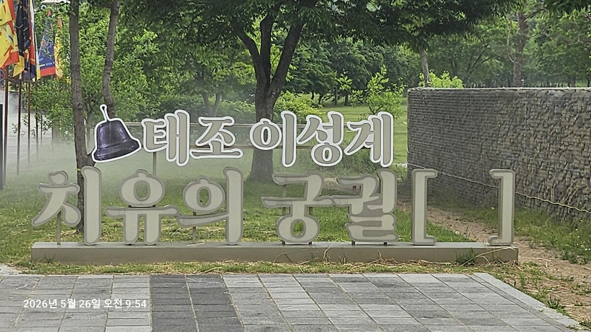
'태조 이성계 치유의 궁궐' 표지물. 09:54, 첫발을 내딛다.
서울 노원에서 승용차로 30분 남짓. 양주시 회천읍으로 들어서면 천보산이 서서히 눈에 차오른다. '태조 이성계 치유의 궁궐'이라는 표지판이 어딘가 과하게 다정한 문구처럼 보이지만, 사실 틀린 말이 아니다. 태조가 이곳에서 5년 넘게 머물렀다는 기록이 엄연히 남아 있으니.
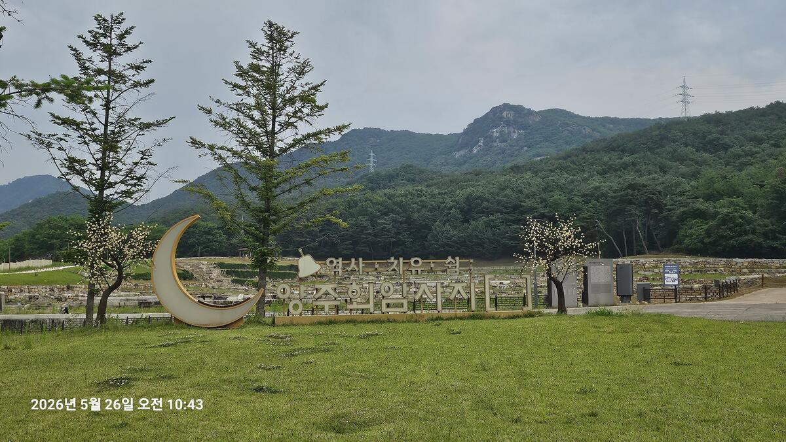
'역사·치유숲 양주회암사지' 입간판과 반달 조형물. 뒤로 천보산의 암봉이 보인다. 10:43
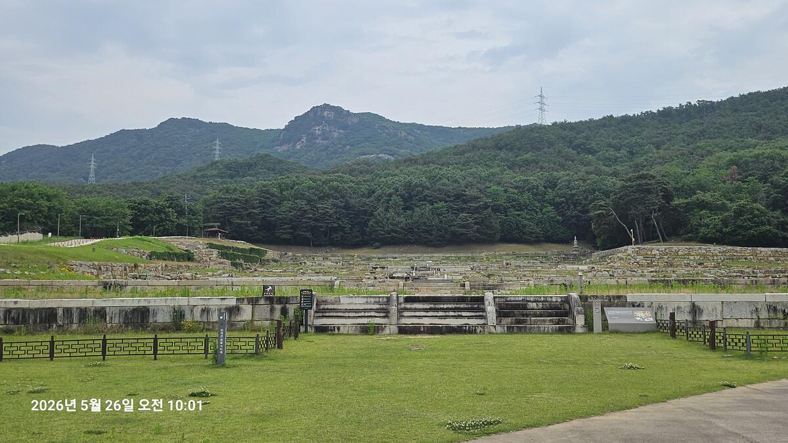
남쪽 진입부에서 바라본 전경. 중앙 석계(石階)가 종축을 따라 북쪽 상단으로 이어지고, 좌우에 건물지 석렬이 대칭으로 펼쳐진다. 뒤로 천보산. 10:01
종축 배치가 글이나 도면이 아닌 실물로 눈에 들어오는 순간이 바로 이 자리다. 중앙 석계를 따라 시선이 자연스럽게 위로 올라간다. 낮은 곳에서 높은 곳으로, 앞에서 뒤로. 이 일직선의 흐름이 회암사지가 다른 사찰과 다른 이유다.
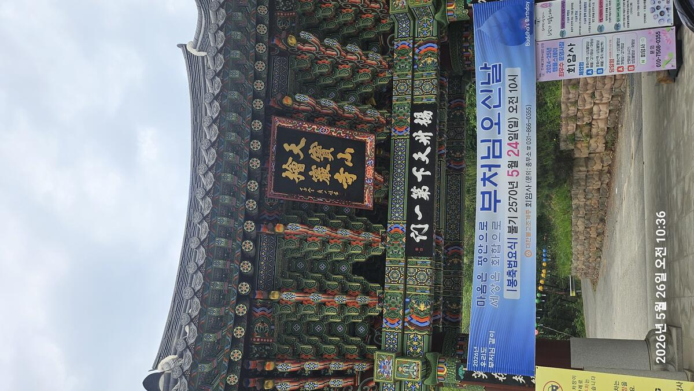
천보산 회암사 일주문. '天寶山 檜巖寺' 현판 아래 불기 2570년 부처님 오신날 봉축 현수막. 이틀 전인 5월 24일 법요식이 열렸다. 10:36
일주문 현판 아래 '양주천하제일(楊州天下第一)'이라는 글귀가 보인다. 전성기 회암사를 두고 이렇게 불렀다는 기록이 있는데, 그 자부심이 지금의 일주문에도 새겨져 있다.
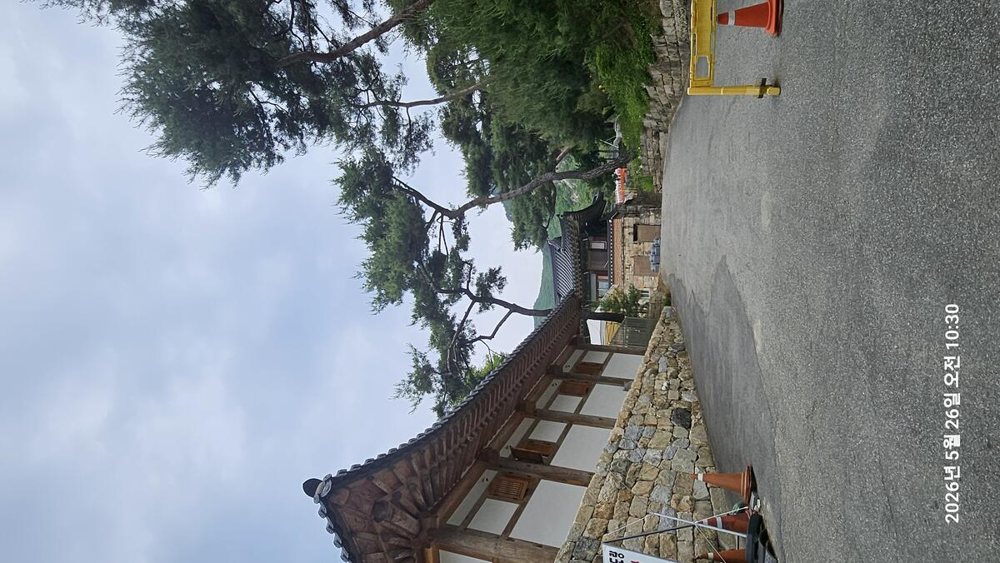
회암사 경내 진입로. 석축 담장과 기와 건물, 굽은 소나무가 경내의 분위기를 만든다. 10:30
경내 한편, 소나무 그늘 아래 석조 유물군이 모여 있다. 무학대사(無學大師, 1327~1405)와 관련된 부도·비석들이다. 무학은 태조 이성계의 왕사(王師)이자 한양 도읍지 결정에 함께했던 인물로, 태조가 왕위를 내놓은 뒤 이 회암사에서 함께 노년을 보낸 스승이다.
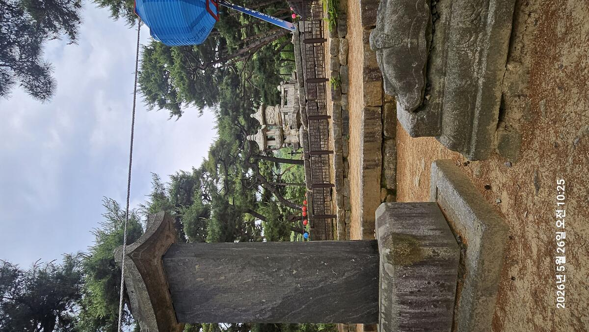
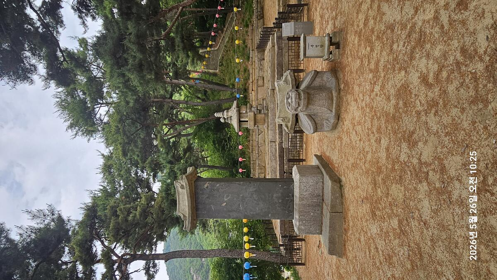
스승이 머무는 절에 기대어 왕은 세월을 보냈다. 권력도, 아들도, 백성도 곁에 없는 자리에서 그가 붙잡은 것은 오래된 인연 하나뿐이었다.
— 태조와 무학대사, 회암사에서의 5년Scene 03
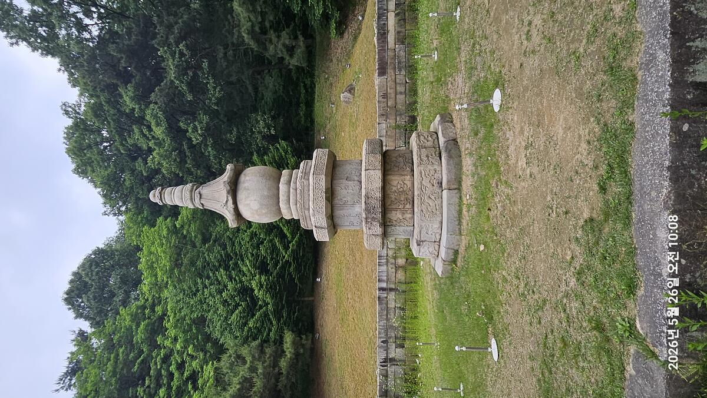
보물 제388호 양주 회암사지 무학대사탑. 팔각 기단 위에 구형(球形) 탑신을 얹은 고려 후기~조선 초 양식. 기단부에 용·구름·연꽃 문양이 새겨져 있다. 10:08
팔각형 기단 위에 둥근 탑신을 올리고, 정갈한 옥개석을 얹은 형태다. 고려 후기부터 조선 초에 걸쳐 나타나는 이 양식은 원나라를 통해 전해진 라마불교 조형 언어를 담고 있다. 같은 시기 경천사지십층석탑과도 계보를 같이하는 형식이다. 기단부의 용·구름 문양과 연꽃 조각이 세월을 버티고 고스란히 남아 있다.
Scene 04
폐사지 구역으로 발을 옮기는 순간, 공간의 질감이 달라진다. 남북 종축을 따라 계단식으로 올라가는 구역들, 수십 채 건물이 빼곡히 들어서 있던 주춧돌들. 건물 간격, 석재의 격식, 계단의 폭. 모두 일반 사찰 수준을 훨씬 넘어선다.
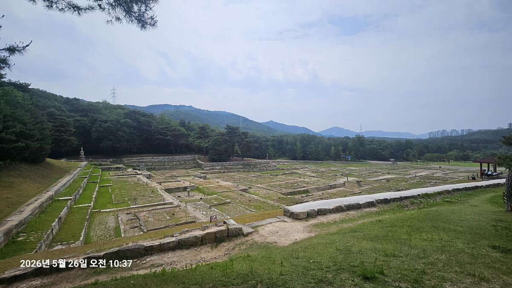
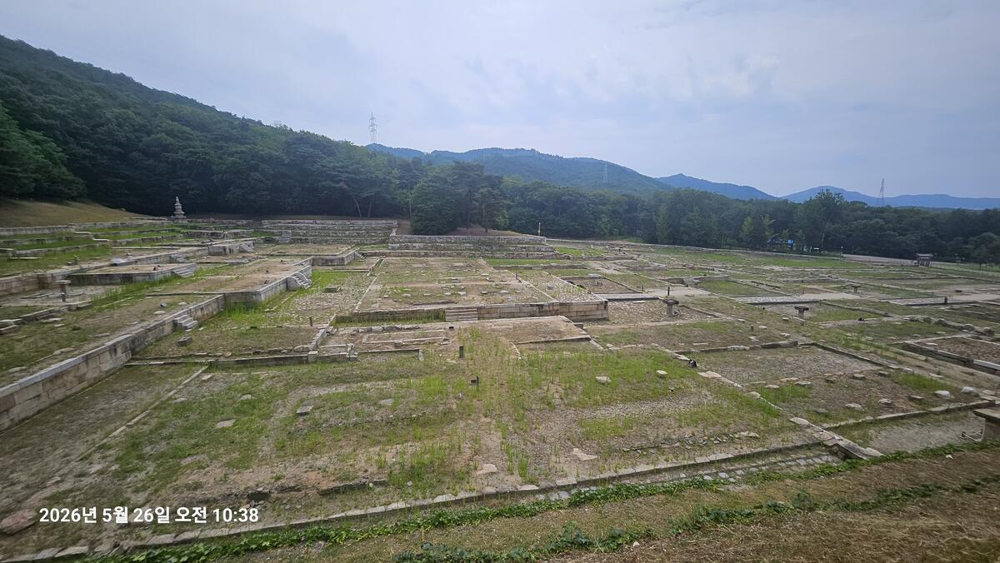
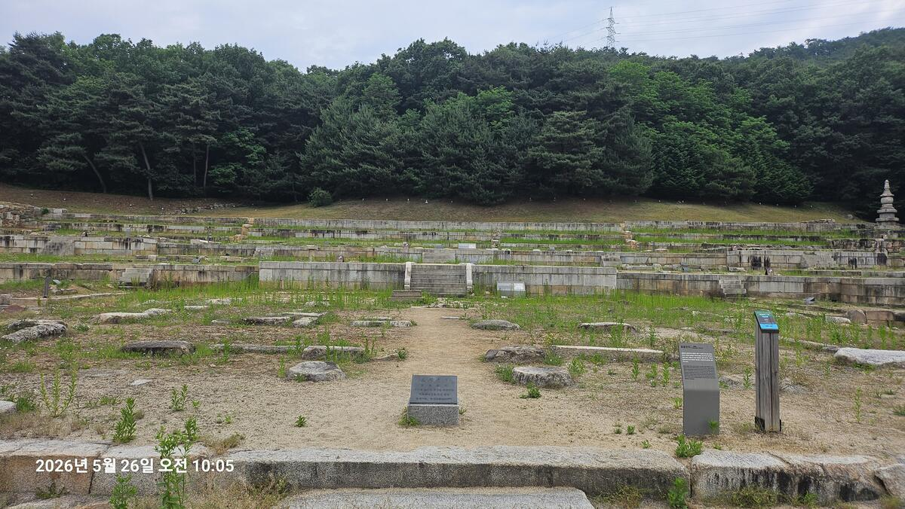
1997년부터 시작된 발굴 조사에서 220여 동의 건물지가 확인됐다. 출토된 용무늬 기와와 왕실 도자기는 이 절이 사찰이면서 동시에 상왕(上王)의 거처였음을 보여준다. 전체 규모가 경복궁의 절반에 이른다는 분석도 있다.
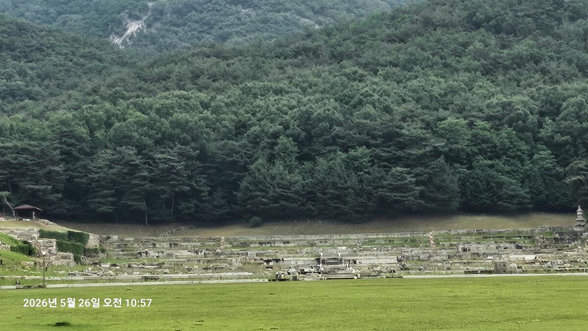
멀리서 바라본 전경. 계단식 석축 위로 건물지가 층층이 쌓이고, 천보산 숲이 뒤를 감싼다. 10:57
Scene 05
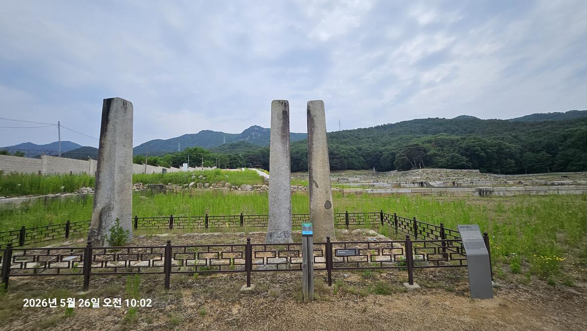
당간지주(幢竿支柱) 세 기. 절 앞에 깃대를 세우던 석조물로, 철책 안에 보존되어 있다. 셋이 나란히 남은 사례는 드물다. 뒤로 천보산 암봉. 10:02
사지 남쪽에 서 있는 세 개의 돌기둥. 당간지주다. 기둥의 높이와 간격에서 전성기 이 절이 얼마나 크고 당당했을지가 짐작된다.
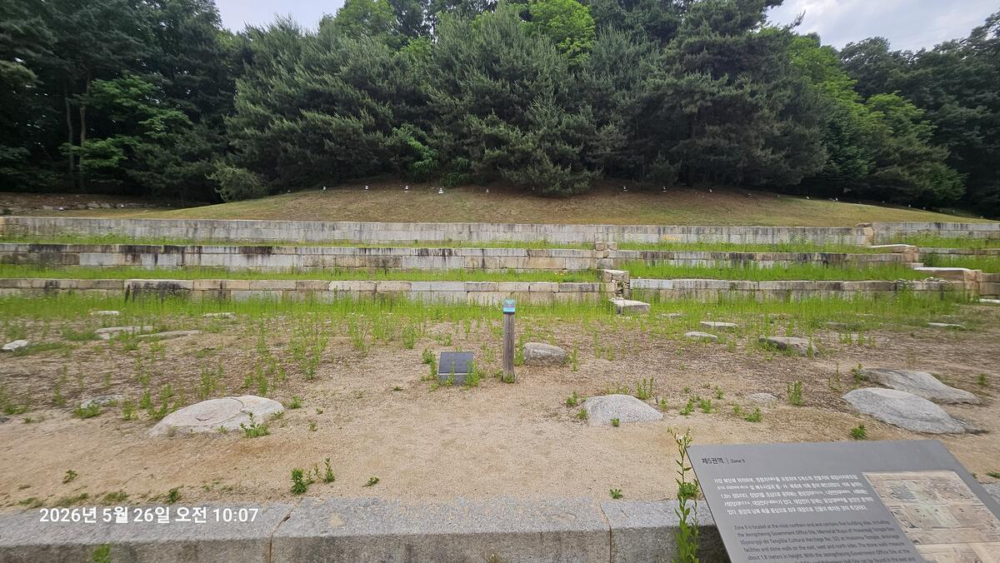
제5권역(Zone 5). 가장 북쪽 높은 곳. 계단식 석축이 여러 단으로 쌓여 있고, 오른쪽 아래에 안내판이 보인다. 태조가 머물렀던 어실(御室) 관련 시설이 있었을 것으로 추정된다. 10:07
제5권역은 일직선 종축의 최상단이다. 높이 약 1.8미터의 석축이 동서를 감싸는 구조로, 이 권역에 태조가 실제로 머물렀던 어실지(御室址)가 포함되어 있을 가능성이 높다고 연구자들은 본다. 함흥차사 설화의 실제 배경지이기도 하다.
Scene 06
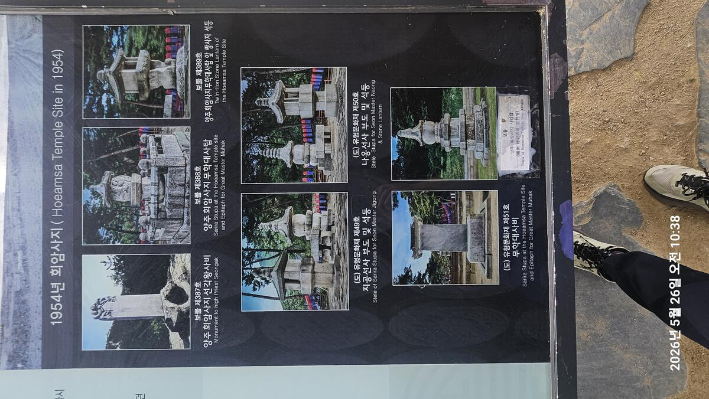
1954년 당시 회암사지 유물 현황 안내판. 현재 보물로 지정된 6점의 유물이 당시 흑백 사진으로 기록되어 있다. 10:38
흑백 사진 속 유물들이 지금 내 눈앞에 남아 있는 것들과 같은 자리에, 같은 모습으로 서 있다. 70년의 세월 동안 전쟁도 지나갔고 도시화도 밀려왔지만 돌은 그 자리에 그대로였다.
Scene 07
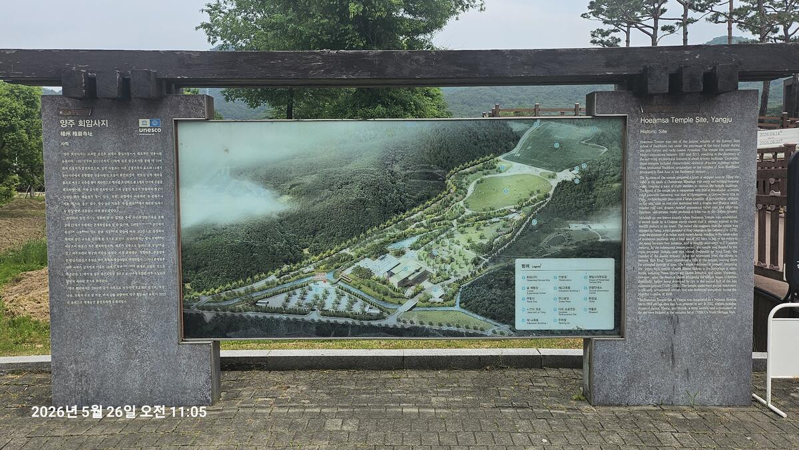
입구의 UNESCO 전망판. 회암사지 전체 조감 배치도와 한영 이중 설명. 배치도에서 남북 종축 일직선 구조가 한눈에 보인다. 11:05
답사를 마치고 나오는 길, 입구 쪽 대형 전망판 앞에 다시 섰다. 전망판 안의 조감도에서 건물들이 정확히 남북 종축을 따라 일직선으로 배열되어 있는 것이 한눈에 들어온다. 현장을 돌고 나서 보니 아까와는 다르게 읽혔다. 단마다 어떤 건물이 있었는지, 태조가 머물던 자리가 어디였는지가 그려지기 시작했다.
2023년 유네스코 세계유산 잠정목록에 등재된 이 터. 남아 있는 건물은 없지만, 오히려 그렇기에 더 넓고 더 선명하게 공간의 역사가 읽히는 곳이다.
Closing
회암사지를 나서면서 한 가지 생각이 머릿속에 남았다. 조선을 세우고, 왕위를 내어주고, 산중의 절에서 여생을 마감한 그 늙은 왕이 이 일직선의 돌 위에서 무엇을 바라보았을까. 앞에서 뒤로, 낮은 데서 높은 데로 이어지는 종축 위에서, 그는 끝내 마음의 안식을 찾았을까.
답사는 답을 주지 않는다. 다만 그 질문을 품고 서 있기에 가장 좋은 자리를 알려줄 뿐이다. 양주 회암사지는 그런 자리다.
건물은 사라졌지만 돌은 남아 있다. 남아 있는 돌이 없어진 것들을 더 잘 말해준다.
— 2026년 5월 26일 오전, 회암사지에서산사에서 여생을 보낸 노왕도, 결국 죽음을 피할 수는 없었다. 그를 묻을 자리가 필요했다. 그 자리가 건원릉이었다.
답사 정보 / Visitor Info